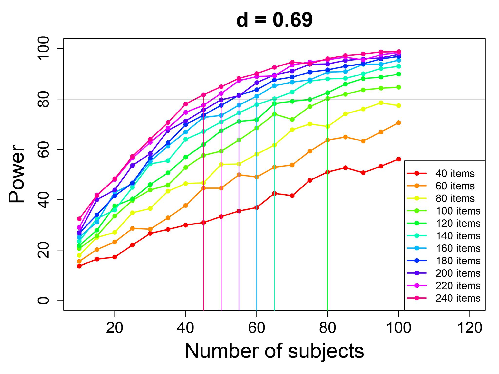
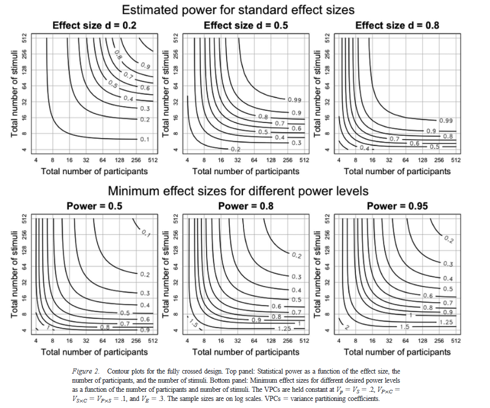

Because power analysis is a part of study planning, it will often be the case that you don't have a specific sample size in
mind; instead, you might want to try power analysis on a lot of different sample sizes, in order to see which sample size
will give you enough power to conduct the study. People's goal is often to design a study with at least 80% power to
detect the effect they're interested in. Thus, people will often make a power curve, showing the calculated power
for various sample sizes, to see which sample size gets 80% power or more. For example, maybe your power calculations show
that if you do an experiment with 10 participants in each group you'll only have about 25% power to detect the effect size
you're interested in, with 20 participants per group you'll have about 45% power, with 30 per group you'll have 62% power,
with 40 you'll have 75% power, and at 45 participants per group you'll finally reach 80% power. Thus, you might then plan
to do your study with 45 participants in each group (90 total).
See this blog post for a similar point as what I just described above.
You can make power curves like this with this useful web app. This works
for simple research designs, e.g. in which one person contributes one data point; we will discuss more complicated designs
in the next exercise. When you open this app and make a power curve, the bottom left graph will show the kind of power
curve I was discussing above; the other graphs show different useful curves (remember that power analysis can be used to
calculate different things, and thus we can show different combinations of things in these curves.)
Play with the power curve app to see how different sample sizes and different effect sizes influence power.
Think about the situation I described at the beginning of this question (a study where 10 participants per group will yield
25% power, 20 participants per group will yield about 45% power, etc.). How big does the effect size (Cohen's
d) need to be to yield this particular power curve?
The example we discussed previously was of a very simple research design, in which you compare two groups directly, and each
participant in each group just contributes one number to the dataset. Cases like this are simple, and there are simple
math formulae or simple online tools ("power calculators") to deal with them. In most linguistics research, however, study
designs are more complicated.
For example, in many studies, there is not just one piece of data per participant. Maybe a participant responds to many
things (many questions in a test, or many trials in a psycholinguistic or phonetic experiment, etc.), and the score we get
for that participant later is an average across those. Therefore, to design a study like that, we have to decide not just
how many participants to recruit in our experiment, but how many trials/items/questions each participant should see. Thus,
we might make more complicated power curves. Here's an example from a power analysis I did for one of my studies

I made this when I was planning an ERP experiment (see the "Electrophysiology" module to learn more). In this kind of study,
we let people be exposed to many linguistic stimuli (usually sentences, words, sounds, or something like that), and then
we average together their brain responses to the stimuli. Thus, I had to decide both how many participants to get, and how
many words ("items") to play to each participant. I expected, based on reviewing previous experiments on similar topics,
that the effect size in my study might be close to d=0.69. Thus, I made these curves to help make my decision;
the vertical lines show, for any given number of items, what's the smallest number of participants that would give me at
least 80 power. (These values were calculated from another
web-based power calculator, specifically designed for ERP data.)
I can see, for example, that if I make an experiment with 240 words, then I will need around 45 participants to reach 80%
power; however, it might be hard to find enough appropriate words to use for this study! On the other hand, I could make
an experiment with only 120 words, and still get 80% power... but then I would need to find 80 people, instead of 45, to
join my experiment. So there are power tradeoffs to be made.
You can also use these kinds of power curves to see what your maximum ideal number of participants or items should be. For
example, if the number of participants is above 60, then the lines for 200 items, 220 items, and 240 items are all pretty
much together; in other words, if I have 200 items and 60 participants, then there's not much benefit to adding more
items! Likewise, if I have 240 items and 70 participants, then the line gets pretty flat, meaning that there's not much
benefit to adding more participants.
For realistic experiment designs, there start to be a lot of different things that can influence power (the EEG example
above was already pretty simplified), and it can become very complicated to calculate power;
Westfall et al. (2014) discuss this issue in
much more detail. For now, just consider the set of power curves shown below from their paper. This is showing the same
sort of thing as my above example, just in a different format (the y-axis represents number of items now, instead of
power, and the different lines represent different power levels). Based on these graphs, if you are doing an
experiment where you expect an effect size of d=0.5, how many participants and items would you plan to have in
your experiment?

In reality, doing accurate power analysis is often impossible. As you've seen from the previous question, it needs many
kinds of information that you might not know, such as the expected effect size; if you look in detail at the
Westfall et al. (2014) paper or
my ERP power calculator, you see that it also needs you
to fill in a lot of numbers such as the within-participant variance and complicated stuff like that. Expected effect size
is hard to know (your research hypothesis is probably something like "I expect this will be bigger than that", rather than
"I expect this will be 0.73 standard deviations bigger than that"!), but at least you might have a reasonable feeling
about it when you look at other research (at least you might know if this effect tends to be big or small). However,
things like the amount of within-participants variance is something that it's hard to have intuition about. Therefore,
often the only way to do a good power analysis is to have a previous dataset (e.g., from an experiment you did before, or
from someone else's experiment if they make their data available—for example, many psycholinguistic datasets are
available at this
repository). You can't just use pilot data (e.g., running a mini-experiment with two or three people) to estimate
these values, because data from a small number of people won't give an accurate estimate; you really need to have a whole
dataset.
So, what do you do when you don't have a previous dataset? What if you're doing someone no one else has done before?
In such a situation, you might not be able to calculate power, but you can at least do things that you know will increase
power. For example, in this paper I could not do
power analysis but I just listed many things that we did in the study to increase power. Some things that increase
power:
- Having more participants. If two studies are equal in every way except the number of participants, then the study with
more participants will have more power. Most studies in our field are underpowered, especially studies done more than
a few years ago. Thus, as a rule of thumb, you can look at how many participants most previous studies used, and just
double or triple that.
- The above also applies to number of items, stimuli, or anything else like that.
- The other thing that makes power bigger is having a bigger effect, and/or less variance around that effect. So you can
make the effect as big as possible by designing your study well—for example, making sure you design the study
to elicit the effect strongly. You can also reduce the variation of the effect by keeping your study
well-controlled—for example, testing all your participants under the same conditions (and using
within-participant designs, rather than between-participants designs, as much as possible). (Of course, there may be
trade-offs here: for example, if you control the participants very carefully then it might be hard to get a large
number of participants, or if you get a large number of participants it might be hard to control their
characteristics very well.) Finally, appropriate statistical methods can help you have a bigger effect or have less
variance around your effect; for example, using regression to parcel out extra sources of variation (see the
"Regression" model for details) can help you identify your effect more precisely, and thus have more power.
Think about your own research. What can you do to maximize your statistical power in a study you are planning?